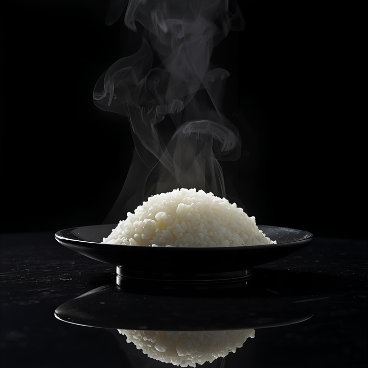

Home
Sushi Rice

How to Prepare Sushi Rice
A step-by-step guide to cooking the perfect base for your sushi.
Ingredients
- 2 cups uncooked sushi rice
- 3 cups water
- 1/2 cup of vinegar or less to taste
- 1 tablespoon vegetable oil
- 1/4 cup of white sugar or less to taste
- 1 teaspoon salt or less to taste
Steps
- Gather all ingrdients
- Rinse the rice in a strainer or colander under cold running water until the water runs clear
- Combine rice and water in a saucepan over medium-high heat and bring to a boil. Reduce heat to low, cover, and cook until rice is tender and all water has been absorbed, about 20 minutes. Remove from stove and set aside until cool enough to handle.
- Meanwhile, combine rice vinegar, oil, sugar, and salt in a small saucepan over medium heat. Cook until the sugar has dissolved. Allow to cool. Then stir into the cooked rice. While mixture will appear very wet at first, keep stirring and rice will dry as it cools.
- Then stir into the cooked rice. While mixture will appear very wet at first, keep stirring and rice will dry as it cools.
- Enjoy!